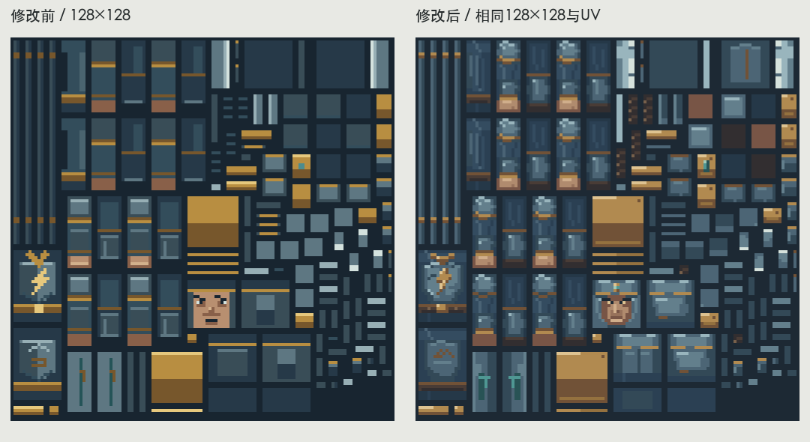
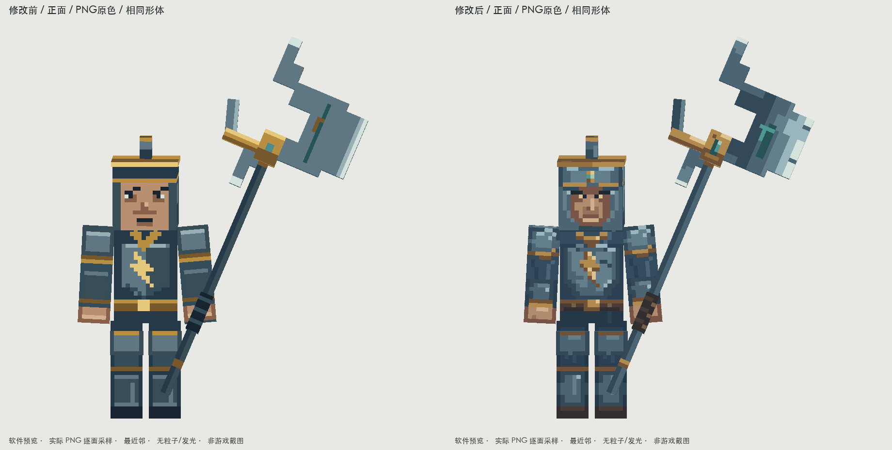
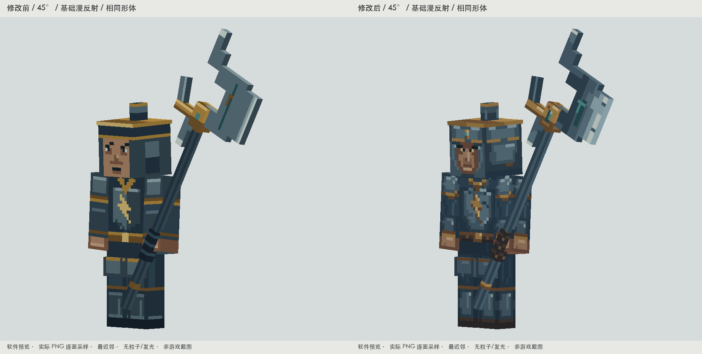
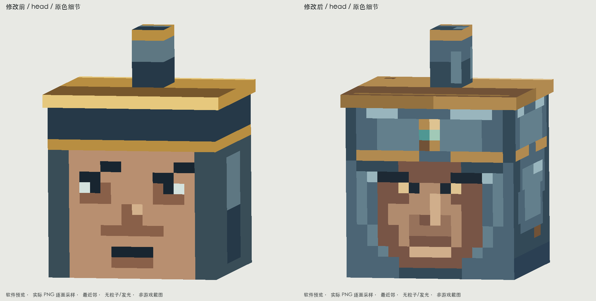
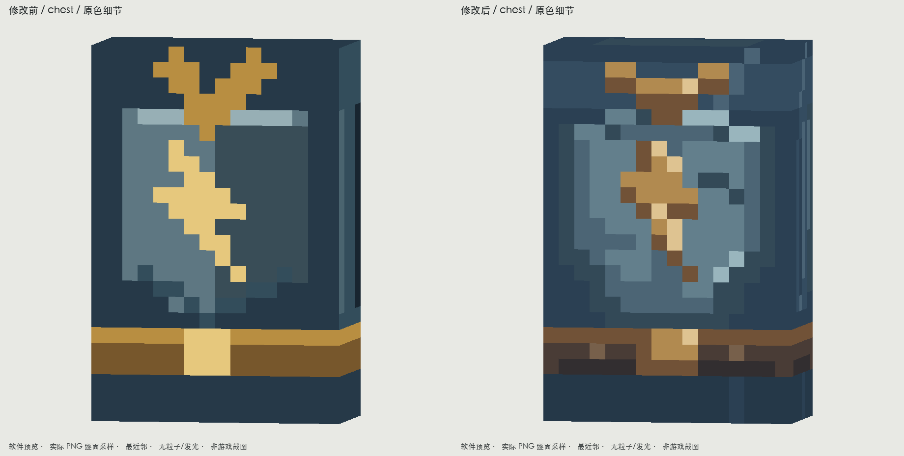
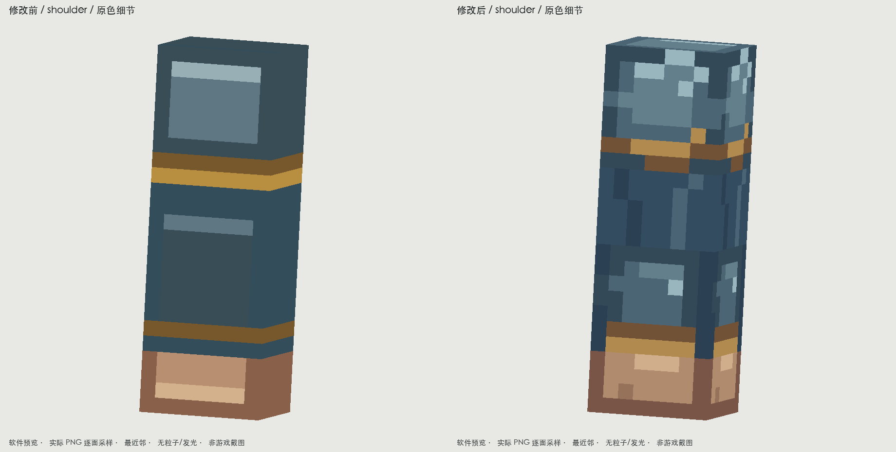
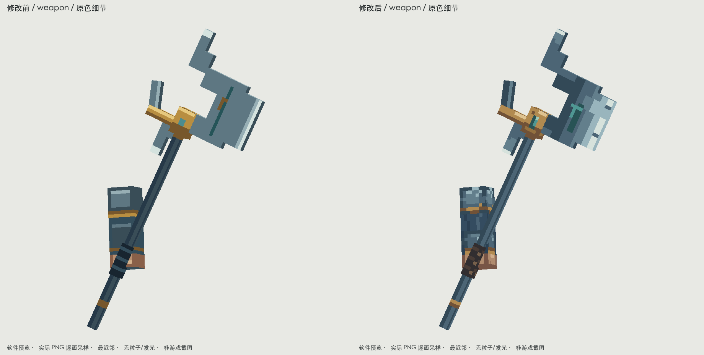
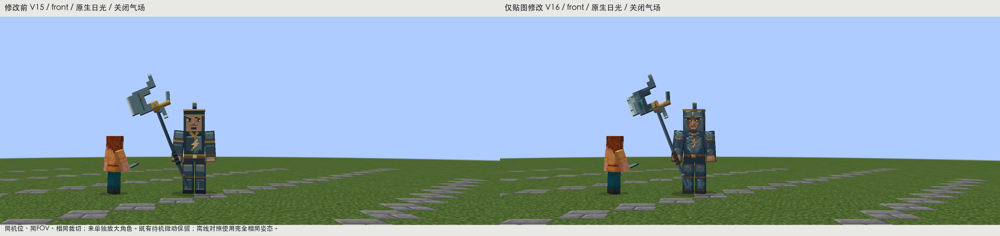
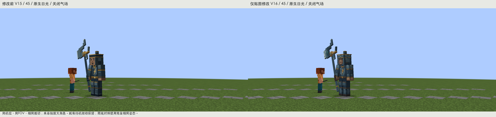

九霄天将：模型锁定，只精修贴图
生产资源只改一张 PNG。模型、比例、骨架、装备位置、兵器、碰撞、动画和全部 UV 均保留；geo.json 与 animation.json 相比 V15 逐字节一致。仍是原来的 128×128 图集，没有增加分辨率，也没有新增几何结构。
修改前后：真实图集

原始128×128，四倍最近邻；相同UV，全部原创绘制。
修改前原始 PNG · 修改后原始 PNG · 修改后4倍最近邻 · 仅PNG运行资源包 · 原模型内嵌新贴图的可编辑源文件
同形体、同姿态、同机位对照

正面 / 原色贴图软件预览
45度 / 基础漫反射软件预览
头部、胸甲、肩部与武器近景

头部：压眉、眼窝与护颊铁面；古金冠沿、玉点
胸甲：同一大甲面的深浅折面；沿用原创雷纹
肩部：甲面转折与有限磨损；深蓝衣褶分开
大戟：连续钢面与切削刃、克制缺损；皮革握柄
冷铁通过大甲面、转折与少量亮边区分内外；古金改为暗金底、古金面与克制亮点。深蓝布料按折叠方向画低对比像素簇；腰带与戟柄使用暗皮革。玉点使用深底与少量浅像素，均为非发光 PNG。雷纹沿用角色已有标识，未新增家族、阵营或剧情设定。
正面与45度独立预览
实际游戏加载验证

真实游戏，前后相同普通日光机位与裁切；待机微动保持。
真实游戏45度，玩家与石砖参照；气场关闭。
构建通过，PNG在源资源、处理资源和JAR中逐字节一致。静音隐藏的独立Forge世界完成14项受控检查，各帧核对实际加载的模型、动画与PNG哈希；保留原有移动、攻击接触、恢复、受伤与死亡。未操作用户存档。该验证确认加载与美术表现，不冒充自然遭遇或多人平衡验收。
实机正面完整截图 · 实机45度完整截图 · 原攻击接触帧 · 实际加载核对 · 模型/UV未变与导出检查
UV、材质与距离检查
既有动作回放
实际参考与改动原因
实际查看了灾变现有研究安装中 Scylla 的原始图集和游戏正面，以及 Maledictus 的盔甲图集和游戏正面：借鉴的是甲面深浅分区、内层留暗、古金边框有主次、布与铁不共用一种表面处理。分别落实在天将眉压与护颊、胸肩钢面、低对比深蓝衣褶和旧金饰边。没有复制颜色、纹样、贴图、模型或动画，也没有将鬼翼、粒子与宣传光效算作PNG层次。灾变作者发布页 · 实际查看的资源和借鉴部位。
根因是旧绘制中金属大面近乎平填、布与铁过于接近、脸部与冠沿主次不足。已重新组织这些表面；图集分辨率、UV和预览采样没有问题，均保留。自检时又修正了月牙戟上段过暗的问题，使钢面跨相邻块连续。权威绘制源为 tools/art/tianjiang-texture-v16/paint.py；现有 V15 完整导出也调用这个源，下次导出不会恢复旧贴图。